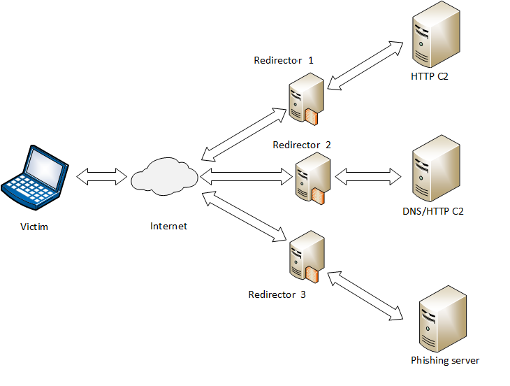

Design your attack infrastructure
In this post, I would like to start with a quote from Sun Tzu, a Chinese general, military strategist and author of "The Art of War" who said:
Victorious warriors win first and then go to war, while defeated warriors go to war first and then seek to win.
For this purpose, it is better to establish a good plan of attack before starting anything in order to deploy a resilient infrastructure which can stand for weeks and months to evade detection and hinder incident responders. Because when the blue team finds out that there organization has been compromised and they start identifying the C2 traffic, they will start blocking our C2 domains as a preventive step üòï
Before everything else we have to avoid typical pentest infrastructure which may look something like this:This means that all the assets needed to perform the attack are on the same server so if any single component, such as the phishing email, is identified as being malicious, there is a high chance that a large portion of what we did before will be compromised üòÆ
Well, in this case we need a better infrastructure to persist for long period üëø. Like this one :
Don't worry, we will go step by step so that you understand every detail üòâ. First we have to setup multiple C2 servers, multiple redirectors, phishing servers or payload delivery servers as that would give us the required flexibility and Resilience. For example, If our phishing server got caught we would not loose control over the hosts we already own as our C2 server is hosted on a different server and domain üëå
Well two types of C2 servers is better to have üòá:
- Those kind of servers on which we would receive callbacks after every few seconds. This is the one which would be used to actually execute commands on the victim’s machine in real time.
- And those on which we would receive callbacks after every few hours. This would help us to persist and evade malicious traffic detection.
Second, putting redirectors in the front of each C2 server, provide obfuscation and protect our core infrastructure from getting identified and blocked by the incident responders üí°
These are other advantages :
- Our core infrastructure would stay hidden even when blue team finds out what domains the malware is communicating to. If they start to block the domains, we can quickly switch to a different redirector running on a different domain in real time.
- Only the C2 traffic would be redirected to the original C2 server. But if anyone else tries to investigate the C2 domain, the redirector server would redirect the traffic to another legit website.
We can implement two different kinds of redirection :
- It will forward all the incoming traffic to the C2 server. Iptables or Socat can do the trick.
- Or forwarding all the C2 traffic to the C2 server and redirecting all other traffic to a legit website. With mod_rewrite we can redirect anybody visiting the C2 domain to another legitimate site.
Once everything is ready, it is time to create our evil payload. For this I highly recommend you to use Powershell Empire. Check this post for more information.
⚠️ Wait a second, it is useless to create a simple payload which will be detected easily, isn't it ?
So In order to evade AV's and IDS, we first need to understand how they actually work ü§ì. The greater understanding we have as how they flag certain program as malicious, the better we would be at evasion. So keep this in mind :
- Any executable downloaded from the internet would be heavily inspected through a series of security products. So is better to avoid this technique.
- Make the attack look less suspicous by using pre-loaded tools like Powershell, Wscript, regsvr32, etc ... for example when targeting a Windows-based operating system.
- Use Obfuscation, it helps a lot to bypass most of the endpoint protection softwares.
- Any information about the targeted environment we can gather during OSINT could help us make an educated guess about the best option to use for creating our payload.
- Try to play around with C2 server domain name, Protocol used, Url used, User Agent, Server Version, Default page, etc ... in order to evade Signature based NIDS which works by matching the network traffic with any known malware traffic pattern.
- Our payload could communicate to the C2 using TCP, HTTP(s), DNS or any custom protocol. For example, Meterpreter maintains a constant TCP connection with the C2 server. The traffic pattern is very predictable, thus it can be detected easily. If we choose any custom C2 protocol, it might also arise suspicion as that custom protocol is not in the normal traffic dataset. One of the best ways is to use commonly used protocols like HTTP or DNS.
- Never use just an IP address for C2 server communication, as normally, web communication happens only with a domain name. Always check your domain’s reputation if you are buying a pre-owned domains. Buy domains from specific categories like healthcare or finance, since there are less chances that the IDS would inspect or break the SSL connection for that category of domains because of compliance issues.
- Even though, Powershell Empire sends the C2 traffic in the body of HTTP using POST method which is always encrypted, It is not enough to bypass NIDS. Generally, Normal web traffic doesn’t encrypts the entire HTTP POST body which can arise suspicion. It’s always better to use SSL for your C2 traffic and always use a valid and signed certificate from any known CA Authority.
Now imagine you have built your powerful payload, it is time to deliver it inside the internal network of the organization üòà
I am not going to talk about successful physical intrusion and using some kind of USB drives üîå because I think it is out of reach for most hackers. So the best way I think is via email attachment/embedded download link, but keep in mind that your payload it will be run in a sandbox to determine if the attachment is malicious. Payloads served via download link can also be downloaded by these AV solutions and evaluated in a sandbox.
Spending more time analyzing our target, understanding its weaknesses and deploying an effective plan of attack is the best way to achieve our objectives üòé
Well there you go, I hope you liked it. Take care üòä